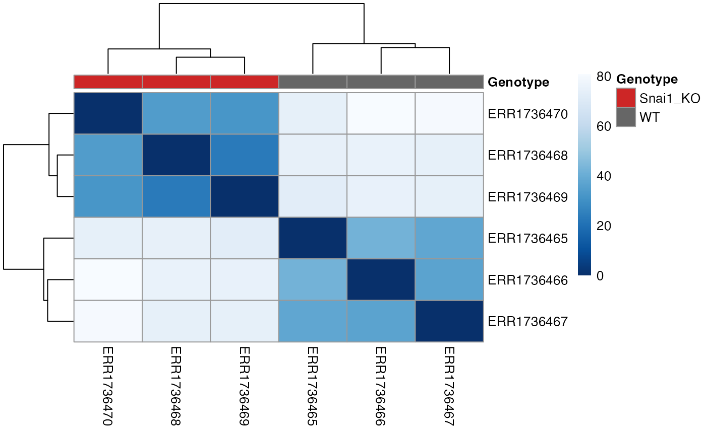

Plot a Euclidean Distance Heatmap
PlotDistances.RdCompute a sample-by-sample distance matrix from a geneda
object and plot a ggplot2 heatmap. Optionally subset metadata columns and
reorder rows/columns by hierarchical clustering.
Usage
PlotDistances(
object,
method = "euclidean",
reorder = TRUE,
meta_cols = NULL,
palettes = NULL,
return = c("object", "plot")
)Arguments
- object
A
genedaobject- method
Distance method for stats::dist (default "euclidean")
- reorder
Logical; if TRUE, reorder rows/cols by hclust on the distance matrix. Default TRUE
- meta_cols
Optional character vector of metadata columns to display in the title/subtitle for quick reference (no annotation strips are drawn).
- palettes
Optional named list of color vectors that can be used downstream (returned) if the caller wants to annotate elsewhere.
- return
One of c("object", "plot"). If "plot", draws the heatmap immediately via grid and still returns the result list. Default "object".
Value
A list with elements: dist_matrix, order (character vector of sample names), heatmap (pheatmap object), palettes (as passed through)
Examples
# \donttest{
mock_norm <- matrix(rnorm(12, mean = 0, sd = 2), nrow = 4, ncol = 3)
colnames(mock_norm) <- paste0("Sample", 1:3)
rownames(mock_norm) <- paste0("Gene", 1:4)
mock_meta <- data.frame(condition = c("A","B","A"), row.names = colnames(mock_norm))
obj <- GenEDA(normalized = mock_norm, metadata = mock_meta)
colorList <- list(condition = c("A" = "red", "B" = "blue"))
PlotDistances(
obj,
meta_cols = c("condition"),
palettes = colorList,
return = "plot")

#> $dist_matrix
#> Sample1 Sample2 Sample3
#> Sample1 0.000000 5.401900 5.935052
#> Sample2 5.401900 0.000000 3.425435
#> Sample3 5.935052 3.425435 0.000000
#>
#> $order
#> [1] "Sample1" "Sample2" "Sample3"
#>
#> $heatmap
#>
#> $palettes
#> $palettes$condition
#> A B
#> "red" "blue"
#>
#>
# }